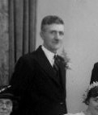

Alfred Dixon 1883 - 1952
[ Home ] | [ Calendar ] | [ Surnames Index ] | [ Errors ] | [ Family History ]Alfred Dixon, the husband of Alice Sarah Cowell (the third cousin twice-removed on the mother's side of Nigel Horne), was born in Burham, Kent, England on 1 Feb 18831 and married Alice (with whom he had 3 children: George Alfred, Frank Ernest and Winifred Alice) in Medway, Kent, England around Nov 19083.
During his life, he was living at 112 Cecil Road, Rochester, Kent on 2 Apr 19114 and on 29 Sept 19391.
He died on 19 Oct 1952 in Chatham, Kent, England2.
Children
- George Alfred was born on 23 Apr 1910
- Frank Ernest was born on 3 Aug 1914
- Winifred Alice was born on 31 May 1917
Citations
- 1939 Register - Findmypast (was the head of the household)
- England & Wales deaths 1837-2007 - Findmypast
- England & Wales marriages 1837-2008 - Findmypast
- 1911 Census for England & Wales - Findmypast (was age 28 and the head of the household)
Media
Alfred Dixon

1939 Register Transcription - TNA-R39-1772-1772J-023-41
1939 Register Transcription - TNA-R39-1772-1772J-023-40
England & Wales deaths 1837-2007 - BMD/D/1952/4/AZ/000266/091
Family Tree

Map
Generated by ged2site. Last updated on Jul 3, 2024
Known Issues
No records of living with anyone